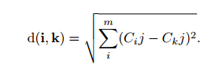
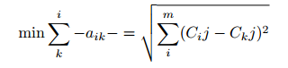
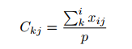

<!doctype html>
<html lang="en" class="no-js">
  <head>
    
      <meta charset="utf-8">
      <meta name="viewport" content="width=device-width,initial-scale=1">
      <meta http-equiv="x-ua-compatible" content="ie=edge">
      
        <meta name="description" content="Text Mining Documentation">
      
      
        <link rel="canonical" href="https://ibara99.github.io/Clustering/">
      
      
        <meta name="author" content="ibara">
      
      
        <meta name="lang:clipboard.copy" content="Copy to clipboard">
      
        <meta name="lang:clipboard.copied" content="Copied to clipboard">
      
        <meta name="lang:search.language" content="en">
      
        <meta name="lang:search.pipeline.stopwords" content="True">
      
        <meta name="lang:search.pipeline.trimmer" content="True">
      
        <meta name="lang:search.result.none" content="No matching documents">
      
        <meta name="lang:search.result.one" content="1 matching document">
      
        <meta name="lang:search.result.other" content="# matching documents">
      
        <meta name="lang:search.tokenizer" content="[\s\-]+">
      
      <link rel="shortcut icon" href="../assets/images/favicon.png">
      <meta name="generator" content="mkdocs-1.0.4, mkdocs-material-4.2.0">
    
    
      
        <title>Clustering - Ibara99's Doc</title>
      
    
    
      <link rel="stylesheet" href="../assets/stylesheets/application.750b69bd.css">
      
        <link rel="stylesheet" href="../assets/stylesheets/application-palette.224b79ff.css">
      
      
        
        
        <meta name="theme-color" content="#2196f3">
      
    
    
      <script src="../assets/javascripts/modernizr.74668098.js"></script>
    
    
      
        <link href="https://fonts.gstatic.com" rel="preconnect" crossorigin>
        <link rel="stylesheet" href="https://fonts.googleapis.com/css?family=Roboto:300,400,400i,700|Roboto+Mono">
        <style>body,input{font-family:"Roboto","Helvetica Neue",Helvetica,Arial,sans-serif}code,kbd,pre{font-family:"Roboto Mono","Courier New",Courier,monospace}</style>
      
    
    <link rel="stylesheet" href="../assets/fonts/material-icons.css">
    
    
    
      
        
<script>
  window.ga = window.ga || function() {
    (ga.q = ga.q || []).push(arguments)
  }
  ga.l = +new Date
  /* Setup integration and send page view */
  ga("create", "None", "auto")
  ga("set", "anonymizeIp", true)
  ga("send", "pageview")
  /* Register handler to log search on blur */
  document.addEventListener("DOMContentLoaded", () => {
    if (document.forms.search) {
      var query = document.forms.search.query
      query.addEventListener("blur", function() {
        if (this.value) {
          var path = document.location.pathname;
          ga("send", "pageview", path + "?q=" + this.value)
        }
      })
    }
  })
</script>
<script async src="https://www.google-analytics.com/analytics.js"></script>
      
    
    
  </head>
  
    
    
    <body dir="ltr" data-md-color-primary="blue" data-md-color-accent="velvet">
  
    <svg class="md-svg">
      <defs>
        
        
          <svg xmlns="http://www.w3.org/2000/svg" width="416" height="448"
    viewBox="0 0 416 448" id="__github">
  <path fill="currentColor" d="M160 304q0 10-3.125 20.5t-10.75 19-18.125
        8.5-18.125-8.5-10.75-19-3.125-20.5 3.125-20.5 10.75-19 18.125-8.5
        18.125 8.5 10.75 19 3.125 20.5zM320 304q0 10-3.125 20.5t-10.75
        19-18.125 8.5-18.125-8.5-10.75-19-3.125-20.5 3.125-20.5 10.75-19
        18.125-8.5 18.125 8.5 10.75 19 3.125 20.5zM360
        304q0-30-17.25-51t-46.75-21q-10.25 0-48.75 5.25-17.75 2.75-39.25
        2.75t-39.25-2.75q-38-5.25-48.75-5.25-29.5 0-46.75 21t-17.25 51q0 22 8
        38.375t20.25 25.75 30.5 15 35 7.375 37.25 1.75h42q20.5 0
        37.25-1.75t35-7.375 30.5-15 20.25-25.75 8-38.375zM416 260q0 51.75-15.25
        82.75-9.5 19.25-26.375 33.25t-35.25 21.5-42.5 11.875-42.875 5.5-41.75
        1.125q-19.5 0-35.5-0.75t-36.875-3.125-38.125-7.5-34.25-12.875-30.25-20.25-21.5-28.75q-15.5-30.75-15.5-82.75
        0-59.25 34-99-6.75-20.5-6.75-42.5 0-29 12.75-54.5 27 0 47.5 9.875t47.25
        30.875q36.75-8.75 77.25-8.75 37 0 70 8 26.25-20.5
        46.75-30.25t47.25-9.75q12.75 25.5 12.75 54.5 0 21.75-6.75 42 34 40 34
        99.5z" />
</svg>
        
      </defs>
    </svg>
    <input class="md-toggle" data-md-toggle="drawer" type="checkbox" id="__drawer" autocomplete="off">
    <input class="md-toggle" data-md-toggle="search" type="checkbox" id="__search" autocomplete="off">
    <label class="md-overlay" data-md-component="overlay" for="__drawer"></label>
    
      <a href="#k-means" tabindex="1" class="md-skip">
        Skip to content
      </a>
    
    
      <header class="md-header" data-md-component="header">
  <nav class="md-header-nav md-grid">
    <div class="md-flex">
      <div class="md-flex__cell md-flex__cell--shrink">
        <a href="https://ibara99.github.io/" title="Ibara99's Doc" class="md-header-nav__button md-logo">
          
            <i class="md-icon"></i>
          
        </a>
      </div>
      <div class="md-flex__cell md-flex__cell--shrink">
        <label class="md-icon md-icon--menu md-header-nav__button" for="__drawer"></label>
      </div>
      <div class="md-flex__cell md-flex__cell--stretch">
        <div class="md-flex__ellipsis md-header-nav__title" data-md-component="title">
          
            <span class="md-header-nav__topic">
              Ibara99's Doc
            </span>
            <span class="md-header-nav__topic">
              Clustering
            </span>
          
        </div>
      </div>
      <div class="md-flex__cell md-flex__cell--shrink">
        
          <label class="md-icon md-icon--search md-header-nav__button" for="__search"></label>
          
<div class="md-search" data-md-component="search" role="dialog">
  <label class="md-search__overlay" for="__search"></label>
  <div class="md-search__inner" role="search">
    <form class="md-search__form" name="search">
      <input type="text" class="md-search__input" name="query" placeholder="Search" autocapitalize="off" autocorrect="off" autocomplete="off" spellcheck="false" data-md-component="query" data-md-state="active">
      <label class="md-icon md-search__icon" for="__search"></label>
      <button type="reset" class="md-icon md-search__icon" data-md-component="reset" tabindex="-1">
        &#xE5CD;
      </button>
    </form>
    <div class="md-search__output">
      <div class="md-search__scrollwrap" data-md-scrollfix>
        <div class="md-search-result" data-md-component="result">
          <div class="md-search-result__meta">
            Type to start searching
          </div>
          <ol class="md-search-result__list"></ol>
        </div>
      </div>
    </div>
  </div>
</div>
        
      </div>
      
        <div class="md-flex__cell md-flex__cell--shrink">
          <div class="md-header-nav__source">
            


  

<a href="https://github.com/ibara99/Simple-Web-Crawling" title="Go to repository" class="md-source" data-md-source="github">
  
    <div class="md-source__icon">
      <svg viewBox="0 0 24 24" width="24" height="24">
        <use xlink:href="#__github" width="24" height="24"></use>
      </svg>
    </div>
  
  <div class="md-source__repository">
    /ibara99/Simple-Web-Crawling
  </div>
</a>
          </div>
        </div>
      
    </div>
  </nav>
</header>
    
    <div class="md-container">
      
        
      
      
        

<nav class="md-tabs" data-md-component="tabs">
  <div class="md-tabs__inner md-grid">
    <ul class="md-tabs__list">
      
        
  <li class="md-tabs__item">
    
      <a href=".." title="Home" class="md-tabs__link md-tabs__link--active">
        Home
      </a>
    
  </li>

      
        
      
        
      
        
      
        
      
        
      
    </ul>
  </div>
</nav>
      
      <main class="md-main">
        <div class="md-main__inner md-grid" data-md-component="container">
          
            
              <div class="md-sidebar md-sidebar--primary" data-md-component="navigation">
                <div class="md-sidebar__scrollwrap">
                  <div class="md-sidebar__inner">
                    <nav class="md-nav md-nav--primary" data-md-level="0">
  <label class="md-nav__title md-nav__title--site" for="__drawer">
    <a href="https://ibara99.github.io/" title="Ibara99's Doc" class="md-nav__button md-logo">
      
        <i class="md-icon"></i>
      
    </a>
    Ibara99's Doc
  </label>
  
    <div class="md-nav__source">
      


  

<a href="https://github.com/ibara99/Simple-Web-Crawling" title="Go to repository" class="md-source" data-md-source="github">
  
    <div class="md-source__icon">
      <svg viewBox="0 0 24 24" width="24" height="24">
        <use xlink:href="#__github" width="24" height="24"></use>
      </svg>
    </div>
  
  <div class="md-source__repository">
    /ibara99/Simple-Web-Crawling
  </div>
</a>
    </div>
  
  <ul class="md-nav__list" data-md-scrollfix>
    
      
      
      


  <li class="md-nav__item">
    <a href=".." title="Home" class="md-nav__link">
      Home
    </a>
  </li>

    
      
      
      


  <li class="md-nav__item">
    <a href="../crawling/" title="Crawling" class="md-nav__link">
      Crawling
    </a>
  </li>

    
      
      
      


  <li class="md-nav__item">
    <a href="../textExtraction/" title="Text Extraction" class="md-nav__link">
      Text Extraction
    </a>
  </li>

    
      
      
      


  <li class="md-nav__item">
    <a href="../preprocessing/" title="Preprocessing" class="md-nav__link">
      Preprocessing
    </a>
  </li>

    
      
      
      

  


  <li class="md-nav__item md-nav__item--active">
    
    <input class="md-toggle md-nav__toggle" data-md-toggle="toc" type="checkbox" id="__toc">
    
    
      <label class="md-nav__link md-nav__link--active" for="__toc">
        Clustering
      </label>
    
    <a href="./" title="Clustering" class="md-nav__link md-nav__link--active">
      Clustering
    </a>
    
      
<nav class="md-nav md-nav--secondary">
  
  
  
    <label class="md-nav__title" for="__toc">Table of contents</label>
    <ul class="md-nav__list" data-md-scrollfix>
      
        <li class="md-nav__item">
  <a href="#k-means" title="K-Means" class="md-nav__link">
    K-Means
  </a>
  
</li>
      
        <li class="md-nav__item">
  <a href="#fuzzy-c-means" title="Fuzzy C-Means" class="md-nav__link">
    Fuzzy C-Means
  </a>
  
</li>
      
        <li class="md-nav__item">
  <a href="#shilhouette-coefisient" title="Shilhouette Coefisient" class="md-nav__link">
    Shilhouette Coefisient
  </a>
  
</li>
      
      
      
      
      
    </ul>
  
</nav>
    
  </li>

    
      
      
      


  <li class="md-nav__item">
    <a href="../Evaluasi/" title="Evaluasi" class="md-nav__link">
      Evaluasi
    </a>
  </li>

    
  </ul>
</nav>
                  </div>
                </div>
              </div>
            
            
              <div class="md-sidebar md-sidebar--secondary" data-md-component="toc">
                <div class="md-sidebar__scrollwrap">
                  <div class="md-sidebar__inner">
                    
<nav class="md-nav md-nav--secondary">
  
  
  
    <label class="md-nav__title" for="__toc">Table of contents</label>
    <ul class="md-nav__list" data-md-scrollfix>
      
        <li class="md-nav__item">
  <a href="#k-means" title="K-Means" class="md-nav__link">
    K-Means
  </a>
  
</li>
      
        <li class="md-nav__item">
  <a href="#fuzzy-c-means" title="Fuzzy C-Means" class="md-nav__link">
    Fuzzy C-Means
  </a>
  
</li>
      
        <li class="md-nav__item">
  <a href="#shilhouette-coefisient" title="Shilhouette Coefisient" class="md-nav__link">
    Shilhouette Coefisient
  </a>
  
</li>
      
      
      
      
      
    </ul>
  
</nav>
                  </div>
                </div>
              </div>
            
          
          <div class="md-content">
            <article class="md-content__inner md-typeset">
              
                
                
                  <h1>Clustering</h1>
                
                <p>Clustering merupakan pengelompokan data menjadi k-kelompok (dengan k merupakan banyak kelompok). Pengelompokan tersebut berdasarkan ciri yang mirip. Pada kasus ini, maka ciri yang mirip bisa diketahui dari kata yang menjadi ciri dari setiap dokumen.</p>
<p>Metode Clustering sendiri ada banyak. Salah duanya adalah K-Means Clustering dan Fuzzy C-Means Clustering.</p>
<p>Setelah dilakukan proses Clustering, perlu kita cari nilai Silhouette Coefficient untuk melihat apakah hasil cluster tersebut sudah bagus atau tidak.</p>
<h3 id="k-means">K-Means<a class="headerlink" href="#k-means" title="Permanent link">&para;</a></h3>
<p>K-means merupakan salah satu metode pengelompokan data nonhierarki (sekatan) yang berusaha mempartisi data yang ada ke dalam bentuk dua atau lebih kelompok. Metode ini mempartisi data ke dalam kelompok sehingga data berkarakteristik sama dimasukkan ke dalam satu kelompok yang sama dan data yang berkarakteristik berbeda dikelompokkan kedalam kelompok yang lain. Adapun tujuan pengelompokkan data ini adalah untuk meminimalkan fungsi objektif yang diatur dalam proses pengelompokan, yang pada umumnya berusaha meminimalkan variasi di dalam suatu kelompok dan memaksimalkan variasi antar kelompok   <sup id="fnref:1"><a class="footnote-ref" href="#fn:1">1</a></sup></p>
<p>Algoritma K-Means adalah:</p>
<ul>
<li>
<p>Tentukan jumlah klaster yang ingin dibentuk dan tetapkan pusat cluster k.</p>
</li>
<li>
<p>Menggunakan jarak euclidean kemudian hitung setiap data ke pusat cluster
  </p>
</li>
<li>
<p>Kelompokkan data ke dalam cluster dengan jarak yang paling pendek dengan persamaan
  </p>
</li>
<li>
<p>Hitung pusat cluster yang baru menggunakan persamaan</p>
</li>
</ul>
<p></p>
<p>Dengan : Xij Kluster ke k p = banyaknya anggota kluster ke - k</p>
<ul>
<li>Ulangi langkah dua sampai dengan empat sehingga sudah tidak ada lagi data yang berpindah ke kluster yang lain</li>
</ul>
<p>Di sini kita akan menggunakan Library <strong>scikit-learn</strong> untuk memudahkan. Berikut codenya:</p>
<div class="codehilite"><pre><span></span><span class="kn">from</span> <span class="nn">sklearn.cluster</span> <span class="kn">import</span> <span class="n">KMeans</span>
<span class="c1"># Clustering</span>
<span class="n">kmeans</span> <span class="o">=</span> <span class="n">KMeans</span><span class="p">(</span><span class="n">n_clusters</span><span class="o">=</span><span class="mi">5</span><span class="p">,</span> <span class="n">random_state</span><span class="o">=</span><span class="mi">0</span><span class="p">)</span><span class="o">.</span><span class="n">fit</span><span class="p">(</span><span class="n">tfidf_matrix</span><span class="o">.</span><span class="n">todense</span><span class="p">())</span>

<span class="k">for</span> <span class="n">i</span> <span class="ow">in</span> <span class="nb">range</span><span class="p">(</span><span class="nb">len</span><span class="p">(</span><span class="n">kmeans</span><span class="o">.</span><span class="n">labels_</span><span class="p">)):</span>
    <span class="k">print</span><span class="p">(</span><span class="s2">&quot;Doc </span><span class="si">%d</span><span class="s2"> =&gt;&gt; cluster </span><span class="si">%d</span><span class="s2">&quot;</span> <span class="o">%</span><span class="p">(</span><span class="n">i</span><span class="o">+</span><span class="mi">1</span><span class="p">,</span> <span class="n">kmeans</span><span class="o">.</span><span class="n">labels_</span><span class="p">[</span><span class="n">i</span><span class="p">]))</span>
</pre></div>

<p>Code di atas adalah code untuk melakukan clustering. Pada contoh ini cluster dibagi menjadi 5. Banyak cluster bisa diubah sesuai kebutuhan.</p>
<h3 id="fuzzy-c-means">Fuzzy C-Means<a class="headerlink" href="#fuzzy-c-means" title="Permanent link">&para;</a></h3>
<p>Konsep dasar <em>Metode C-Means Clustering</em>  yaitu untuk menentukan 
pusat cluster. yang akan menandai lokasi untuk setiap cluster, dengan 
cara memperbaiki pusat cluster sehingga terbentuk suatu cluster baru.<sup id="fnref:2"><a class="footnote-ref" href="#fn:2">2</a></sup></p>
<p>Untuk melihat perhitungan manualnya, silakan klik <a href="http://contohprogram.com/fuzzy-c-means.xls">di sini</a>. Berikut merupakan code untuk melakukan Fuzzy C-Means menggunakan Library <strong>scikit-fuzzy</strong></p>
<div class="codehilite"><pre><span></span><span class="kn">import</span> <span class="nn">skfuzzy</span> <span class="kn">as</span> <span class="nn">fuzz</span>
<span class="n">cntr</span><span class="p">,</span> <span class="n">u</span><span class="p">,</span> <span class="n">u0</span><span class="p">,</span> <span class="n">distant</span><span class="p">,</span> <span class="n">fObj</span><span class="p">,</span> <span class="n">iterasi</span><span class="p">,</span> <span class="n">fpc</span> <span class="o">=</span> <span class="n">fuzz</span><span class="o">.</span><span class="n">cmeans</span><span class="p">(</span><span class="n">tfidf</span><span class="o">.</span><span class="n">T</span><span class="p">,</span> <span class="mi">3</span><span class="p">,</span> <span class="mi">2</span><span class="p">,</span> <span class="mf">0.00001</span><span class="p">,</span> <span class="mi">1000</span><span class="p">)</span>
<span class="n">membership</span> <span class="o">=</span> <span class="n">np</span><span class="o">.</span><span class="n">argmax</span><span class="p">(</span><span class="n">u</span><span class="p">,</span> <span class="n">axis</span><span class="o">=</span><span class="mi">0</span><span class="p">)</span>
</pre></div>

<p>parameter dari fuzzy c-means berturut-turut : data, jumlahCluster, pembobot, erorMaksimal, serta IterasiMaksimal.</p>
<h3 id="shilhouette-coefisient">Shilhouette Coefisient<a class="headerlink" href="#shilhouette-coefisient" title="Permanent link">&para;</a></h3>
<p>Shilhouette Coefisient merupakan salah satu metode evaluasi yang digunakan untuk model Cluster, seperti K-Means atau Fuzzy C-Means. Metode ini berfungsi untuk menguji kualitas dari cluster yang dihasilkan<sup id="fnref:3"><a class="footnote-ref" href="#fn:3">3</a></sup>.  Untuk menghitung nilai silhoutte coefisient diperlukan jarak antar dokumen dengan menggunakan rumus <em>EuclideanDistance</em>. Setelah itu tahapan untuk menghitung nilai silhoutte coeffisien adalah sebagai berikut :</p>
<ol>
<li>
<p>Untuk setiap objek i, hitung rata-rata jarak dari objek i dengan  seluruh objek yang berada dalam satu cluster. Akan didapatkan nilai  rata-rata yang disebut a*i*.</p>
</li>
<li>
<p>Untuk setiap objek i, hitung rata-rata jarak dari objek i dengan  objek yang berada di cluster lainnya. Dari semua jarak rata-rata  tersebut ambil nilai yang paling kecil. Nilai ini disebut b*i*.</p>
</li>
<li>
<p>Setelah itu maka untuk objek i memiliki nilai <em>silhoutte coefisien</em> :</p>
</li>
</ol>
<p></p>
<p>Hasil perhitungan nilai silhoutte coeffisien dapat bervariasi antara -1 hingga 1. Hasil clustering dikatakan baik jikai nilai silhoutte coeffisien bernilai positif. Maka dapat dikatakan, jika s*i* = 1 berarti objek <em>i</em> sudah berada dalam cluster yang tepat. Jika nilai s*i* = 0 maka objek <em>i</em> berada di antara dua cluster sehingga objek tersebut tidak jelas harus dimasukan ke dalam cluster A atau cluster B. Akan tetapi, jika s*i* = -1 artinya struktur cluster yang dihasilkan overlapping, sehingga objek <em>i</em> lebih tepat dimasukan ke dalam cluster yang lain. </p>
<p>Nilai rata-rata silhoutte coeffisien dari tiap objek dalam suatu cluster adalah suatu ukuran yang menunjukan seberapa ketat data dikelompokan dalam cluster tersebut.</p>
<p>Sourcecode untuk Shilhouette menggunakan Library <strong>scikit-learn</strong> adalah sebagai berikut:</p>
<div class="codehilite"><pre><span></span><span class="kn">from</span> <span class="nn">sklearn.metrics</span> <span class="kn">import</span> <span class="n">silhouette_score</span>
<span class="n">s_avg</span> <span class="o">=</span> <span class="n">silhouette_score</span><span class="p">(</span><span class="n">xBaru2</span><span class="p">,</span> <span class="n">membership</span><span class="p">,</span> <span class="n">random_state</span><span class="o">=</span><span class="mi">10</span><span class="p">)</span>
</pre></div>

<p>dengan parameter berturut-turut: data, hasil_cluster, dan random_state.</p>
<div class="footnote">
<hr />
<ol>
<li id="fn:1">
<p>Maulida, Linda. "PENERAPAN DATAMINING DALAM MENGELOMPOKKAN KUNJUNGAN  WISATAWAN KE OBJEK WISATA UNGGULAN DI PROV. DKI JAKARTA DENGAN K-MEANS."  <em>JISKA (Jurnal Informatika Sunan Kalijaga)</em> 2.3 (2018): 167-174.&#160;<a class="footnote-backref" href="#fnref:1" title="Jump back to footnote 1 in the text">&#8617;</a></p>
</li>
<li id="fn:2">
<p><a href="http://www.infoseribucara.com/algoritma/algoritma-c-means-clustering-demo-program.html">http://www.infoseribucara.com/algoritma/algoritma-c-means-clustering-demo-program.html</a>&#160;<a class="footnote-backref" href="#fnref:2" title="Jump back to footnote 2 in the text">&#8617;</a></p>
</li>
<li id="fn:3">
<p><a href="https://lookmylife.wordpress.com/2011/10/03/metode-silhoutte-coeffisien/">https://lookmylife.wordpress.com/2011/10/03/metode-silhoutte-coeffisien/</a>&#160;<a class="footnote-backref" href="#fnref:3" title="Jump back to footnote 3 in the text">&#8617;</a></p>
</li>
</ol>
</div>
                
                  
                
              
              
                


              
            </article>
          </div>
        </div>
      </main>
      
        
<footer class="md-footer">
  
    <div class="md-footer-nav">
      <nav class="md-footer-nav__inner md-grid">
        
          <a href="../preprocessing/" title="Preprocessing" class="md-flex md-footer-nav__link md-footer-nav__link--prev" rel="prev">
            <div class="md-flex__cell md-flex__cell--shrink">
              <i class="md-icon md-icon--arrow-back md-footer-nav__button"></i>
            </div>
            <div class="md-flex__cell md-flex__cell--stretch md-footer-nav__title">
              <span class="md-flex__ellipsis">
                <span class="md-footer-nav__direction">
                  Previous
                </span>
                Preprocessing
              </span>
            </div>
          </a>
        
        
          <a href="../Evaluasi/" title="Evaluasi" class="md-flex md-footer-nav__link md-footer-nav__link--next" rel="next">
            <div class="md-flex__cell md-flex__cell--stretch md-footer-nav__title">
              <span class="md-flex__ellipsis">
                <span class="md-footer-nav__direction">
                  Next
                </span>
                Evaluasi
              </span>
            </div>
            <div class="md-flex__cell md-flex__cell--shrink">
              <i class="md-icon md-icon--arrow-forward md-footer-nav__button"></i>
            </div>
          </a>
        
      </nav>
    </div>
  
  <div class="md-footer-meta md-typeset">
    <div class="md-footer-meta__inner md-grid">
      <div class="md-footer-copyright">
        
          <div class="md-footer-copyright__highlight">
            Copyright &copy; 2016 - 2019 Martin Donath
          </div>
        
        powered by
        <a href="https://www.mkdocs.org">MkDocs</a>
        and
        <a href="https://squidfunk.github.io/mkdocs-material/">
          Material for MkDocs</a>
      </div>
      
  <div class="md-footer-social">
    <link rel="stylesheet" href="../assets/fonts/font-awesome.css">
    
      <a href="https://github.com/ibara99" class="md-footer-social__link fa fa-github-alt"></a>
    
  </div>

    </div>
  </div>
</footer>
      
    </div>
    
      <script src="../assets/javascripts/application.8c0d971c.js"></script>
      
      <script>app.initialize({version:"1.0.4",url:{base:".."}})</script>
      
    
  </body>
</html>